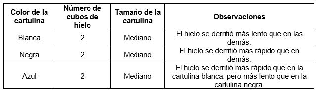

Alexa y sus compañeros de grupo en un día soleado en el patio del colegio, realizaron el siguiente experimento: Tomaron cartulinas de diferentes colores y las colocaron en el suelo. Posteriormente, colocaron cubos de hielo del mismo tamaño en cada cartulina. Registraron sus observaciones en la siguiente tabla:
